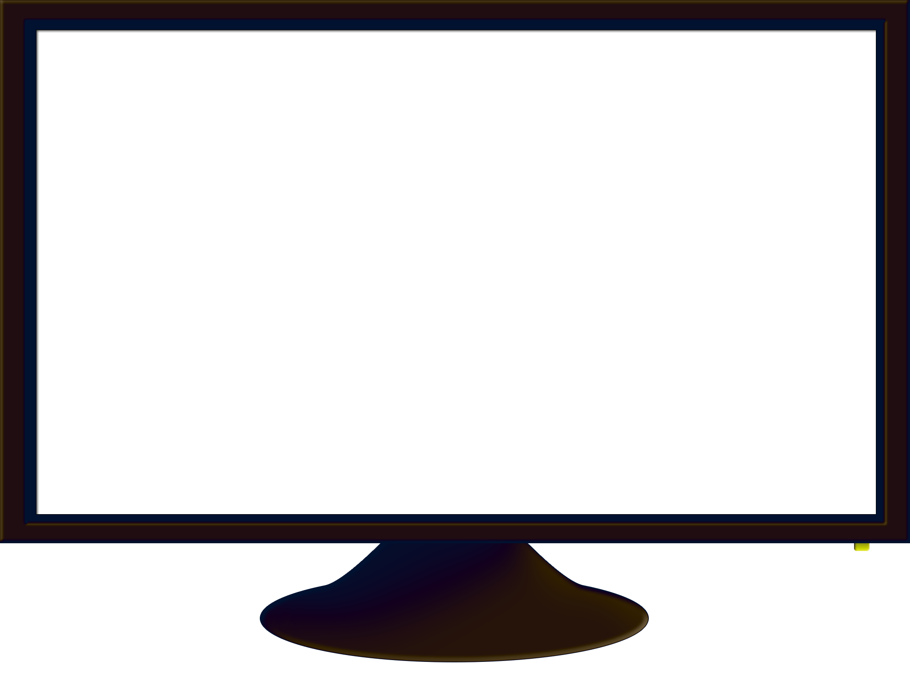
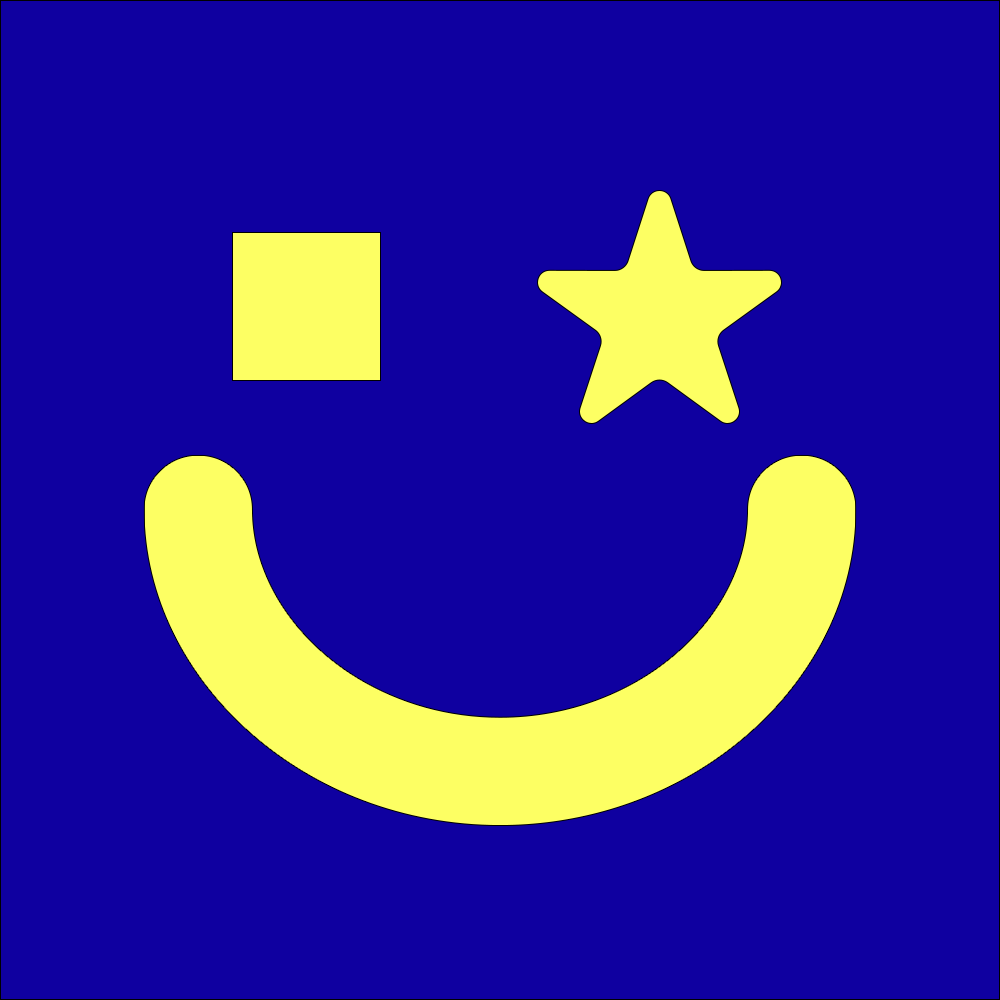

01 / 07

A personal archive website created to preserve
memories of my 2025 trip to the United States.
I brought moments from the journey together in a digital space through photos and videos.
The website was built using vibe coding.
2025년 미국 여행의 추억을 보관하기 위해 제작한 개인 아카이브 사이트입니다. 사진과 영상을 통해 여행의 순간들을 하나의 디지털 공간에 모아 담았습니다.
바이브 코딩을 활용해 제작했습니다.